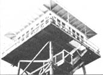

Feeling a slight sense of apprehension, I took my first look at what was to be home for my husband and me over the course of the three months to come: a 12' X 12' glass-enclosed room perched on top a 40-foot tower on northern Idaho's Gisborne Mountain. Mike and I were about to begin a season as fire lookouts for the U.S. Forest Service . . . and I was still a bit leery of the rustic life we would lead in our crow's-nest.
The tower was at the end of a chunky, rutted road . . . some 30 miles from a store, ten miles from our nearest neighbor, and two miles from any source of water. We had no electricity, and only a small government radio for communication. The furnishings in our mountaintop aerie included a bed, a table and two chairs, a tiny stove, a midget refrigerator . . . and the tool of our "trade": the four-foot-tall fire-finder we used to search for plumes of smoke.
Besides spotting possible blazes, our other responsibility was to report daily weather data to the regional Forest Serv ice station . . . so, as you can imagine, we looked forward to having a lot of spare time to enjoy our magnificent 360° view of mountains, lakes, and sky.
Soon after settling into the lofty home, we realized that water would be our most precious resource. Because the nearest spring was a round-trip hike of four miles, we had to devise ways to conserve the supply (a Forest Service truck made periodic - if irregular - visits to fill up our two 10-gallon tanks).
The biggest water wasters in most urban homes, of course, are the various components of the indoor plumbing system. Since we had an outhouse - and no piped-in water - we didn't even have to concern ourselves with that kind of extravagance. Mike and I found, however, that we were able to save still more of the valuable liquid by practicing our own unorthodox (but efficient! ) conservation methods.
Our baths were usually shared, short (nobody lingers when bathing on a windy catwalk in 40°F weather!) . . . and lim ited to one every two or three days. We washed our clothes - once a week - in the rainwater collected in a two-gallon bucket. Furthermore, Mike and I found that - if we steamed our vegetables - the same water could be reused for several meals. We also made it a habit to eat together, out of the same pot or pan, so that we'd have fewer dishes to do. Then all our eating and cooking utensils for the day were washed after dinner . . . and one evening's rinse water was saved to serve as the next day's wash water.
In spite of such Spartan methods, we were actually quite comfortable . . . and a bit proud of the fact that our water consumption was less than 2% of that of many American couples (we went through 15-20 gallons a week, as compared to an average-use figure of 200 gallons a day!). We were surprised - and pleased - to know that so little could do so much!
We also learned how to stretch our stockpile of food. Storage space was at a premium inside our cramped quarters . . . so Mike and I quickly found ways to trim our food supply while maintaining a varied diet. ( An added benefit of such frugality was the low cost of our simple meals . . . in fact - at summer's end - we estimated that the two of us had spent a total of $75 for food during our entire stay in Idaho!
The tower was equipped with only a small single-burner propane cooker, so our dinners usually consisted of one-skillet dishes, such as a vegetable and rice mixture. One of our favorite staples was dried lentils: They're inexpensive, easy to store, and nutritious. We often ate the legumes as a cooked vegetable, and also sprouted them for use in salads.
Our healthful, low-budget diet was supplemented by the amazing array of wild foods growing on our Idaho mountain . . . including thimbleberries, raspberries, serviceberries, wild ginger, mint, dandelions, cattails, goldenrod, and fireweed. On sunny days, the catwalk outside our tower room was crowded with boxes of our foraged harvest . . . all of it "baking" into wild teas and dried fruits. Our best discovery, however, was the patch of huckleberries that sprang up right at the foot of the tower. The private hoard provided us, for weeks , with the basis for delicious pie, syrup, cake, relish, jelly, and jam.
Since no electricity ran to the tower, our energy usage was minimal. We got along very nicely without many of the "standard" appliances found in most American homes . . . and even managed to reduce our use of the tower's propane heater and lamp. After all, our glass-enclosed home received brilliant sunshine - on all sides - from 5 a.m. until 9 p.m. every day, so we hardly felt the need for artificial heat or light.
My energy-economical husband - who was eager to make use of that sun-pro vided heat - designed and constructed a simple solar shower, which we used out on the lower level of the catwalk. The device consisted of a small black metal plate collector (positioned just below the southern windows) and a five-gallon collapsible plastic water container mounted on the catwalk railing. When the liquid in the latter unit was allowed to drip through a hose and into the copper tubing of the collector, it was warmed by the sun . . . and then flowed through a second hose into another storage unit (really just an old styrofoam ice chest) which hung under the catwalk just above the top landing. Mike attached a faucet and shower head to the last container . . . so whenever we wanted a quick solar shower, it was ready and waiting for us!
Long after we finished our service as Forest Service fire lookouts, the spirit of the simple lifestyle on Gisborne Mountain remained with us. By doing without most of the creature comforts of modern civilization, we had become more attuned to the natural world . . . and had learned to recognize the efficiency of nature in its untouched state. Even though we returned to our permanent home and winter jobs, our tower experience left us with a new understanding of self-sufficiency that we've since tried to apply to every aspect of our daily lives.
Related Articles:
LIVE AND LEARN IN THE FOREST!
A SEASON IN THE OLYMPICS
|
 |
|
|